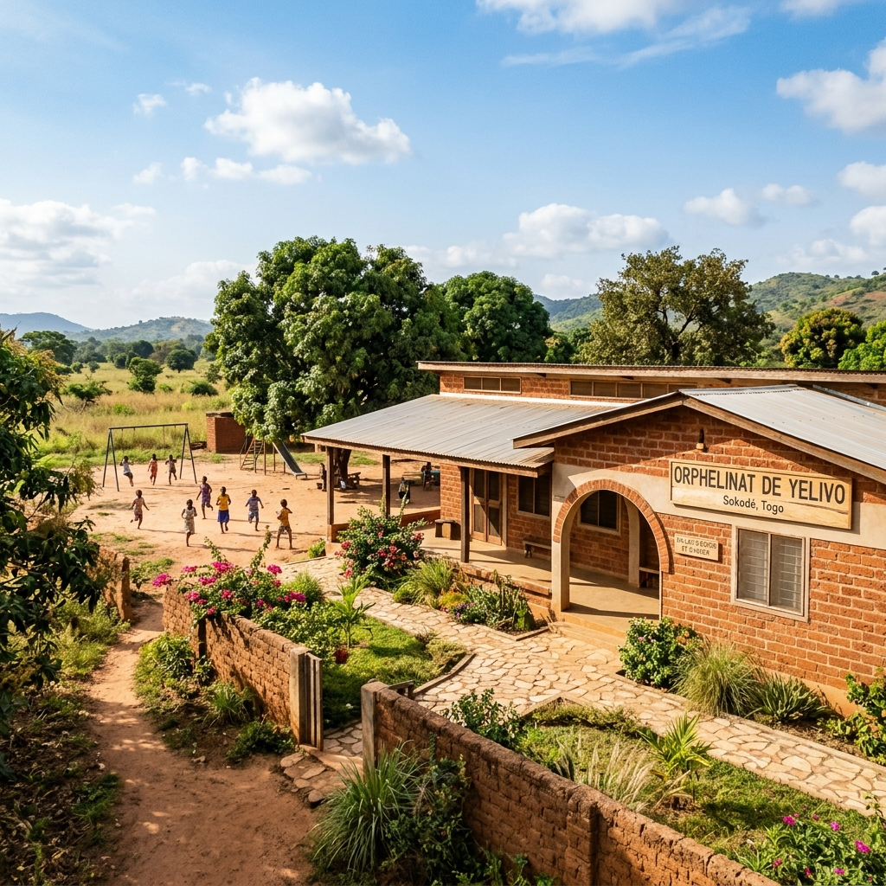

Orphelinat « MES ENFANTS »
Plus qu'un simple toit, un foyer chaleureux pour les enfants privés de famille à Yelivo (région de Sokodé), au Togo. Nous leur offrons éducation, soins, amour et dignité pour leur construire un avenir prometteur.

Un Havre de Paix et d'Espoir
Fondé par l'association UJMAH, l'orphelinat « MES ENFANTS » est né d'un constat poignant sur la situation des orphelins et enfants vulnérables dans la Région Centrale du Togo. Situé dans le village paisible de Yelivo, non loin de Sokodé, notre centre accueille les enfants dans un environnement serein, propice à leur reconstruction physique et psychologique.
Nous croyons fermement que chaque enfant a le droit de grandir entouré d'amour, d'être scolarisé et d'avoir accès à des soins de santé de qualité. Notre équipe d'éducateurs dévoués travaille au quotidien pour offrir à ces enfants un cadre de vie familial et chaleureux.
Amour & Famille
Offrir un environnement affectif stable et bienveillant où chaque enfant se sent écouté et valorisé.
Éducation Durable
Garantir la scolarisation complète de l'école primaire jusqu'aux études supérieures ou formations professionnelles.
Santé & Nutrition
Assurer une alimentation saine, équilibrée et un suivi médical rigoureux pour chaque enfant résident.
Comment soutenir l'Orphelinat ?
Vos dons réguliers ou ponctuels permettent de pérenniser les actions quotidiennes auprès des enfants.
Parrainage Scolaire
Financez les frais de scolarité, l'uniforme, les manuels scolaires et le suivi éducatif d'un orphelin pour toute une année scolaire.
Parrainer un enfantSoutien Alimentaire
Contribuez à l'achat des denrées alimentaires de base (riz, mil, haricots, lait) pour assurer trois repas par jour aux résidents.
Offrir des repasSanté & Pharmacie
Aidez-nous à garnir la boîte à pharmacie de l'orphelinat, à payer les consultations médicales et les traitements d'urgence.
Financer les soinsLa Vie à l'Orphelinat
Quelques instants capturés de notre quotidien chaleureux à Yelivo.